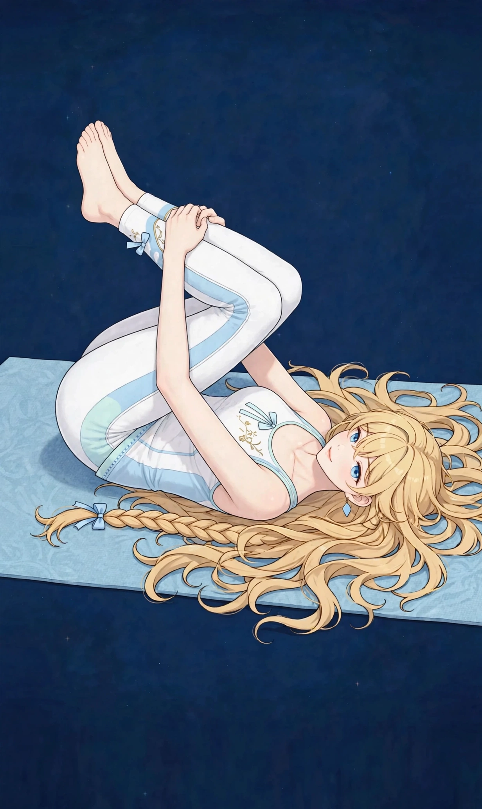

梅田で座りっぱなしの後に気になる腰の重さ｜要因の整理とセルフケア、受診の目安ハウツー

梅田で働く・暮らす方へ。長時間座ったあとに「腰が重だるい」「立ち上がるときに腰まわりが伸びにくい」と感じる腰の重さについて、一般的な解説と考えられる要因の整理、日常で取り入れられるセルフケア、医療機関への受診の目安をまとめました。一般的な健康情報としてお読みください。
#梅田 腰の重さ#座りっぱなし 腰 重い#腰の重だるさ セルフケア#梅田 女性専用 サロン 腰#デスクワーク 腰 ケア
座りっぱなしの後に気になる腰の重さとは（一般的な解説）
腰の重さとは、病名ではなく、長時間座ったあとに「腰が重だるい」「立ち上がるときに腰まわりが伸びにくい」「夕方になると腰に重さがたまったように感じる」と感じる感覚を表す言葉として使われることがあります。朝は気にならなかったのに、デスクワークや会議、移動での着席が続いた日の夕方や仕事帰りに気づく、椅子から立つたびに腰に手を当てたくなる、という訴えは、働く女性からよく聞かれます。感じ方には個人差が大きく、その日の座る時間の長さや体調によっても変わるとされます。
大切なのは、「以前の自分と比べてどうか」「どんな日に気になりやすいか」という視点です。座りっぱなしの時間が長かった日、会議が続いた日、冷房の強い部屋で過ごした日など、気になりやすい場面を簡単に記録しておくと、自分の傾向がつかみやすくなります。この記事では、座りっぱなしの後に気になる腰の重さの一般的な解説と、背景として考えられる要因の整理からお伝えします。なお、重さの感じ方だけで体の状態を判断することはできません。気になる変化が続く場合は、後半の「受診の目安」もあわせてご確認ください。
考えられる要因の整理
1つ目は、同じ姿勢が続くことと、腰まわりの筋肉の使い方です。座っている間、腰や背中、お尻、股関節まわりの筋肉は、大きく動かない代わりに、姿勢を支えるために小さな緊張を続けているとされます。立つ・歩くといった動きの機会が少ない日は、腰まわりを動かす機会も少なくなり、夕方になって重だるさを感じやすいと訴える方がいます。浅く腰掛ける、背もたれに寄りかかったまま過ごす、足を組むといった座り方が重なると、腰まわりへの負担のかかり方も変わってくると考えられます。ただし、感じ方には個人差があり、「これが原因」と決めつけられるものではありません。
2つ目は、椅子や作業環境との関わりです。椅子の高さや座面のかたさ、足裏が床にしっかりつくかどうか、画面の位置によって前かがみの姿勢が続くかどうか——こうした環境の要素が、腰まわりの感じ方に関係する場合があるとされます。鞄や荷物をいつも同じ側で持つ、片側に体重をかけて座るといった日常の癖が重なることもあります。
3つ目は、冷えや緊張、生活リズムとの関わりです。冷房の風に長くあたって腰まわりが冷えた日や、仕事の緊張が続いた日、眠りが浅い日が重なると、腰の重さを感じやすいことがあるとされます。東洋医学では、腰は生命力の土台とされる「腎（じん）」と関わりが深い部位とされてきました。背中から腰、脚の後ろ側を流れる膀胱経や、腰を帯のように巡る帯脈のエリアとも重ねて考えられてきた歴史があります。要因はひとつではなく、その日の働き方や座る時間、季節によって組み合わせが変わるため、思い当たるものをひとつずつ見直すことが大切です。
日常で取り入れられるセルフケア
まずは「こまめに姿勢を変える、立つ」ことです。目安として1時間に一度は立ち上がり、水分を取りに行く、少し歩くなど、座りっぱなしの時間を区切る工夫は取り入れやすい方法です。座ったままでも、骨盤を前後にゆっくり倒す、腰まわりを軽く動かすといった小さな動きを挟めます。強く反らしたり、痛みを感じるほど伸ばしたりする必要はありません。椅子に深く腰掛けて骨盤を立て、足裏全体を床につける座り方の基本も、あわせて見直してみてください。
次に「温める」ことです。帰宅後に湯船につかって腰まわりまで温める、蒸しタオルを腰に当てる、といった方法は、冷えてこわばった部位をいたわる基本とされます。腹巻きなどでお腹や腰を冷やさない工夫も、冷房の強い日には取り入れやすいものです。貼るタイプの温熱用品を使う場合は、低温やけどに十分注意し、使い方の表示を確認してください。
あわせて、帰宅後に腰まわりや股関節まわりをゆっくり動かすストレッチを取り入れることも、無理のない範囲であれば続けやすい方法とされます。ただし、セルフケアはあくまで日常の重さへの対処です。特定の方法に頼りすぎたり、気になる状態を我慢して様子を見続けたりしないようにしてください。重さが強い日は、ケアよりもまず休むことを優先することも大切です。
受診の目安｜こんなときは医療機関へ
座りっぱなしの後の腰の重さの多くは、座る時間の長さや姿勢、冷えや疲労といった日常の要素が重なって感じられるとされますが、中には医療機関での確認を優先したいサインもあります。「脚のしびれや、力が入りにくい感じを伴う」「安静にしていても強い痛みが続く、痛みが少しずつ強くなっている」「発熱を伴う」「転んだりぶつけたりしたあとから気になり始めた」「排尿や排便のしづらさを伴う」「日常生活や仕事に支障が出るほどつらい状態が続いている」といった場合は、セルフケアで様子を見続けず、整形外科など医療機関への受診をおすすめします。
また、腰の重さや痛みの背景には、検査で初めて分かる要素が関係していることもあるため、気になる状態が続く場合は一度相談してみてください。当店のケアはリラクゼーションを目的としたボディケアで、腰の状態や病気を診断したり、それらに対応したりするものではありません。医療機関での確認を優先したうえで、日常のコンディションを整える選択肢のひとつとしてご利用ください。
当店でのケアとサロンのご案内
ステラポラリスは、大阪・梅田エリアのレンタルサロンで施術する女性専用・完全予約制のサロンです。営業は月〜土17:00〜22:00（日曜休み）で、仕事帰りの時間帯に合わせやすい設定です。施術はオイルマッサージと美容整体、料金は90分10,000円です。ご予約はLINE公式アカウント「ポラリス美容整体院」で受付中です。場所は大阪市北区堂山町12-5 ロイヤルハイツ梅田Ⅱ 303号室（レンタルサロンACE内）、中崎町駅から徒歩5分・阪急梅田駅から徒歩8分です。入室方法の詳細はご予約確定後にLINEでご案内します。
施術では、その日の体調や気になる部位をうかがい、腰・背中からお尻・脚を含めた全身を順にほぐしながら、巡りを意識したケアを組み立てます。美容整体では、姿勢の土台となる骨盤まわりや股関節まわりのケアを組み合わせることもできますので、ご希望があればお伝えください。担当は施術歴30年・鍼灸師資格を持つセラピスト1名で、当店では鍼灸施術は行いません。関連するお悩みページ「腰の重だるさ」「背中の張り」や、経絡ページ「膀胱経」「腎経」でも、体の見方やケアの考え方を紹介していますので、あわせてご覧ください。料金や営業時間の詳細は、このページ上部のメニュー・料金案内でもご確認いただけます。